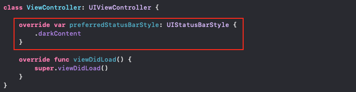

기본 상태바 스타일을 Dark로 만드는 방법
요즘 Dark Mode가 대세(?)라 그런지 많은 앱이 그것에 맞춰 디자인 되고 있다.
하지만, 무조건 그 대세를 따르라는 법은 없다!
Light Mode를 선호하는 사람을 위해 밝은(?) 디자인으로 된 앱을 개발한다고 하자.
그렇게 밝은(?) 배경을 가진 앱을 개발하고 Dark Mode에서 앱을 실행해봤는데,
상단의 Status Bar가 하얀 글씨로 되어있기 때문에 잘 안 보이는 상황이 발생했다.
그러면, 다음과 같이 뷰 컨트롤러마다 Status Bar Style을 지정해 줄 것인가?

이는 매우 수고스러운 일이 될 것이다.
이러한 수고를 피하기 위해 Default Status Bar Style을 지정하고 싶다면, Info.plist 파일에 들어가보자.
그리고 아래와 같이 User Interface Style 키와 Light 값을 추가하도록 하자.
(실제 코드로는 UIUserInterfaceStyle 키를 가진다.)

그러면, 앱의 기본 인터페이스가 밝은(?) 스타일이 되면서, Dark Mode가 아닌 Light Mode로 설정된다.
만약, 특정 뷰 컨트롤러만 Light Status Bar를 갖고 싶다면,
첫 번째 그림과 같이 뷰 컨트롤러에서 .darkContent가 아닌 .lightContent를 반환하도록 하면 된다.
참고로 User Interface Style를 Light로 고정하면, 키보드 및 뷰들의 기본 배경색 등이 모두 Light 스타일이 된다.
Dark Mode로 설정 시, 모두 변경되는 것과 같은 원리이다.